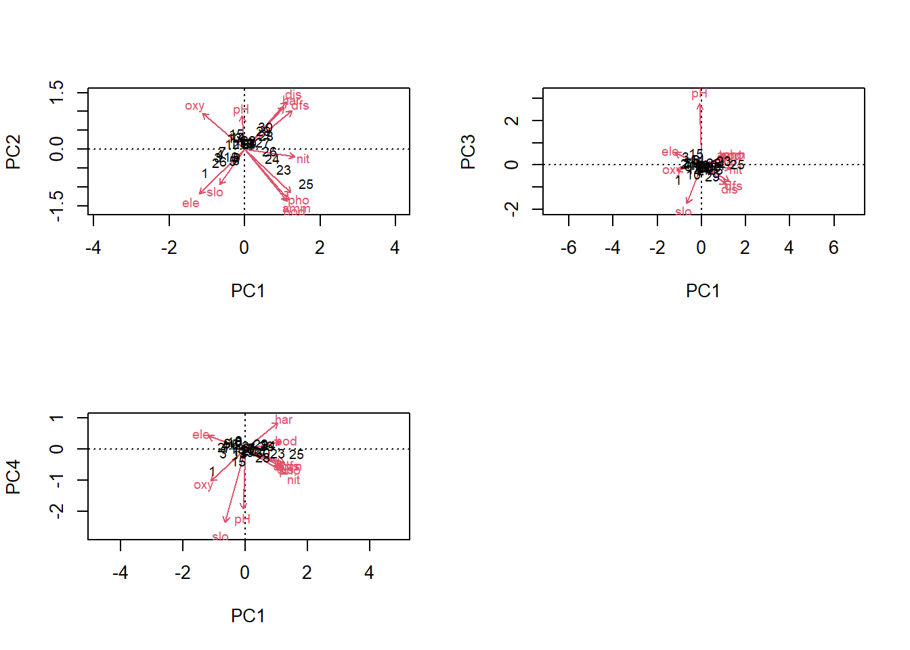
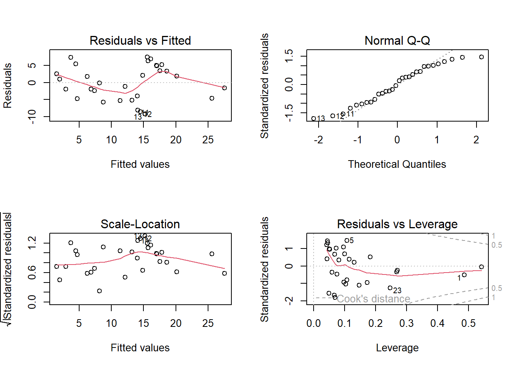
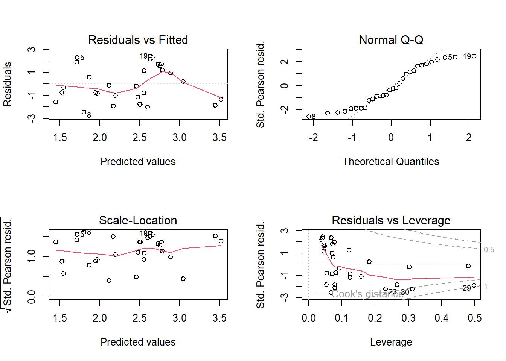
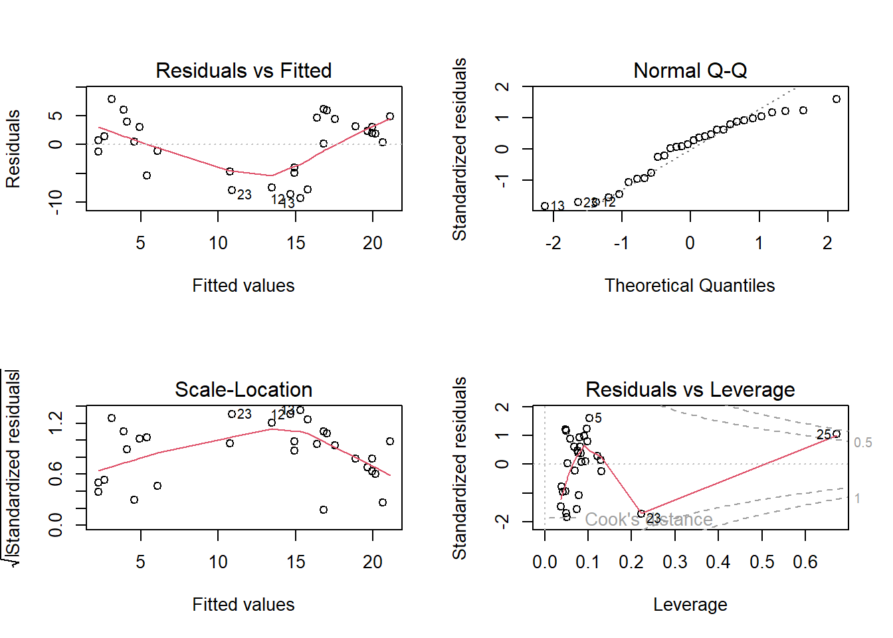
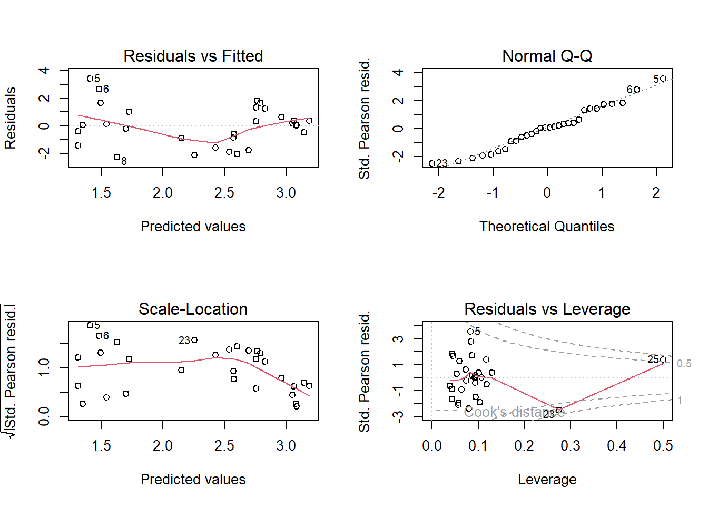
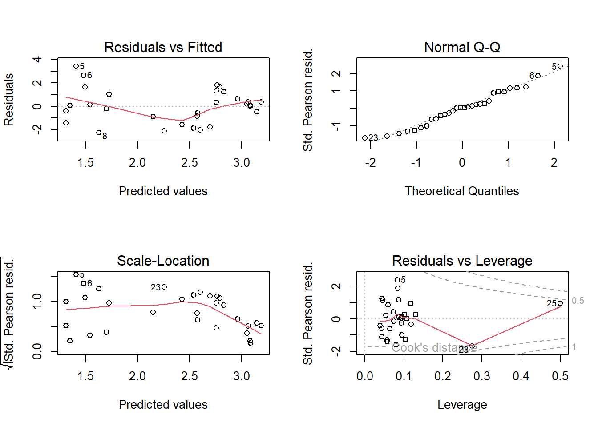

load("datasets/statistik/Doubs.RData")
summary(env)
## dfs ele slo dis
## Min. : 0.30 Min. :172.0 Min. : 0.200 Min. : 0.84
## 1st Qu.: 54.45 1st Qu.:248.0 1st Qu.: 0.525 1st Qu.: 4.20
## Median :175.20 Median :395.0 Median : 1.200 Median :22.10
## Mean :188.23 Mean :481.6 Mean : 3.497 Mean :22.20
## 3rd Qu.:301.73 3rd Qu.:782.0 3rd Qu.: 2.875 3rd Qu.:28.57
## Max. :453.00 Max. :934.0 Max. :48.000 Max. :69.00
## pH har pho nit
## Min. :7.700 Min. : 40.00 Min. :0.0100 Min. :0.150
## 1st Qu.:7.925 1st Qu.: 84.25 1st Qu.:0.1250 1st Qu.:0.505
## Median :8.000 Median : 89.00 Median :0.2850 Median :1.600
## Mean :8.050 Mean : 86.10 Mean :0.5577 Mean :1.654
## 3rd Qu.:8.100 3rd Qu.: 96.75 3rd Qu.:0.5600 3rd Qu.:2.425
## Max. :8.600 Max. :110.00 Max. :4.2200 Max. :6.200
## amm oxy bod
## Min. :0.0000 Min. : 4.100 Min. : 1.300
## 1st Qu.:0.0000 1st Qu.: 8.025 1st Qu.: 2.725
## Median :0.1000 Median :10.200 Median : 4.150
## Mean :0.2093 Mean : 9.390 Mean : 5.117
## 3rd Qu.:0.2000 3rd Qu.:10.900 3rd Qu.: 5.275
## Max. :1.8000 Max. :12.400 Max. :16.700
summary(spe)
## Cogo Satr Phph Babl Thth
## Min. :0.00 Min. :0.00 Min. :0.000 Min. :0.000 Min. :0.00
## 1st Qu.:0.00 1st Qu.:0.00 1st Qu.:0.000 1st Qu.:1.000 1st Qu.:0.00
## Median :0.00 Median :1.00 Median :3.000 Median :2.000 Median :0.00
## Mean :0.50 Mean :1.90 Mean :2.267 Mean :2.433 Mean :0.50
## 3rd Qu.:0.75 3rd Qu.:3.75 3rd Qu.:4.000 3rd Qu.:4.000 3rd Qu.:0.75
## Max. :3.00 Max. :5.00 Max. :5.000 Max. :5.000 Max. :4.00
## Teso Chna Pato Lele
## Min. :0.0000 Min. :0.0 Min. :0.0000 Min. :0.000
## 1st Qu.:0.0000 1st Qu.:0.0 1st Qu.:0.0000 1st Qu.:0.000
## Median :0.0000 Median :0.0 Median :0.0000 Median :1.000
## Mean :0.6333 Mean :0.6 Mean :0.8667 Mean :1.433
## 3rd Qu.:0.7500 3rd Qu.:1.0 3rd Qu.:2.0000 3rd Qu.:2.000
## Max. :5.0000 Max. :3.0 Max. :4.0000 Max. :5.000
## Sqce Baba Albi Gogo Eslu
## Min. :0.000 Min. :0.000 Min. :0.0 Min. :0.000 Min. :0.000
## 1st Qu.:1.000 1st Qu.:0.000 1st Qu.:0.0 1st Qu.:0.000 1st Qu.:0.000
## Median :2.000 Median :0.000 Median :0.0 Median :1.000 Median :1.000
## Mean :1.867 Mean :1.433 Mean :0.9 Mean :1.833 Mean :1.333
## 3rd Qu.:3.000 3rd Qu.:3.000 3rd Qu.:1.0 3rd Qu.:3.750 3rd Qu.:2.000
## Max. :5.000 Max. :5.000 Max. :5.0 Max. :5.000 Max. :5.000
## Pefl Rham Legi Scer Cyca
## Min. :0.0 Min. :0.0 Min. :0.0000 Min. :0.0 Min. :0.0000
## 1st Qu.:0.0 1st Qu.:0.0 1st Qu.:0.0000 1st Qu.:0.0 1st Qu.:0.0000
## Median :0.5 Median :0.0 Median :0.0000 Median :0.0 Median :0.0000
## Mean :1.2 Mean :1.1 Mean :0.9667 Mean :0.7 Mean :0.8333
## 3rd Qu.:2.0 3rd Qu.:2.0 3rd Qu.:1.7500 3rd Qu.:1.0 3rd Qu.:1.0000
## Max. :5.0 Max. :5.0 Max. :5.0000 Max. :5.0 Max. :5.0000
## Titi Abbr Icme Gyce Ruru
## Min. :0.0 Min. :0.0000 Min. :0.0 Min. :0.000 Min. :0.0
## 1st Qu.:0.0 1st Qu.:0.0000 1st Qu.:0.0 1st Qu.:0.000 1st Qu.:0.0
## Median :1.0 Median :0.0000 Median :0.0 Median :0.000 Median :1.0
## Mean :1.5 Mean :0.8667 Mean :0.6 Mean :1.267 Mean :2.1
## 3rd Qu.:3.0 3rd Qu.:1.0000 3rd Qu.:0.0 3rd Qu.:2.000 3rd Qu.:5.0
## Max. :5.0 Max. :5.0000 Max. :5.0 Max. :5.000 Max. :5.0
## Blbj Alal Anan
## Min. :0.000 Min. :0.0 Min. :0.00
## 1st Qu.:0.000 1st Qu.:0.0 1st Qu.:0.00
## Median :0.000 Median :0.0 Median :0.00
## Mean :1.033 Mean :1.9 Mean :0.90
## 3rd Qu.:1.750 3rd Qu.:5.0 3rd Qu.:1.75
## Max. :5.000 Max. :5.0 Max. :5.00
# Die Dataframes env und spe enthalten die Umwelt- respective die Artdaten
if (!require(vegan)) {
install.packages("vegan")
}
library("vegan")Stat6: Lösung
- Download dieses Lösungsscript via “</>Code” (oben rechts)
- Lösungstext als Download
Die PCA wird im Package vegan mit dem Befehl rda ausgeführt, wobei in diesem scale = TRUE gesetzt werden muss, da die Umweltdaten mit ganz unterschiedlichen Einheiten und Wertebereichen daherkommen
env.pca <- rda(env, scale = TRUE)
env.pca
## Call: rda(X = env, scale = TRUE)
##
## Inertia Rank
## Total 11
## Unconstrained 11 11
## Inertia is correlations
##
## Eigenvalues for unconstrained axes:
## PC1 PC2 PC3 PC4 PC5 PC6 PC7 PC8 PC9 PC10 PC11
## 5.969 2.164 1.065 0.739 0.400 0.336 0.173 0.108 0.024 0.017 0.006
# In env.pca sieht man, dass es bei 11 Umweltvariablen logischerweise 11
# orthogonale Principle Components gibt
summary(env.pca, axes = 0)
##
## Call:
## rda(X = env, scale = TRUE)
##
## Partitioning of correlations:
## Inertia Proportion
## Total 11 1
## Unconstrained 11 1
##
## Eigenvalues, and their contribution to the correlations
##
## Importance of components:
## PC1 PC2 PC3 PC4 PC5 PC6 PC7
## Eigenvalue 5.9687 2.1639 1.06517 0.73875 0.40019 0.33563 0.17263
## Proportion Explained 0.5426 0.1967 0.09683 0.06716 0.03638 0.03051 0.01569
## Cumulative Proportion 0.5426 0.7393 0.83616 0.90332 0.93970 0.97022 0.98591
## PC8 PC9 PC10 PC11
## Eigenvalue 0.108228 0.023701 0.017083 0.005983
## Proportion Explained 0.009839 0.002155 0.001553 0.000544
## Cumulative Proportion 0.995748 0.997903 0.999456 1.000000
##
## Scaling 2 for species and site scores
## * Species are scaled proportional to eigenvalues
## * Sites are unscaled: weighted dispersion equal on all dimensions
## * General scaling constant of scores:
# Hier sieht man auch die Übersetzung der Eigenvalues in erklärte Varianzen der
# einzelnen Principle Components
summary(env.pca)
##
## Call:
## rda(X = env, scale = TRUE)
##
## Partitioning of correlations:
## Inertia Proportion
## Total 11 1
## Unconstrained 11 1
##
## Eigenvalues, and their contribution to the correlations
##
## Importance of components:
## PC1 PC2 PC3 PC4 PC5 PC6 PC7
## Eigenvalue 5.9687 2.1639 1.06517 0.73875 0.40019 0.33563 0.17263
## Proportion Explained 0.5426 0.1967 0.09683 0.06716 0.03638 0.03051 0.01569
## Cumulative Proportion 0.5426 0.7393 0.83616 0.90332 0.93970 0.97022 0.98591
## PC8 PC9 PC10 PC11
## Eigenvalue 0.108228 0.023701 0.017083 0.005983
## Proportion Explained 0.009839 0.002155 0.001553 0.000544
## Cumulative Proportion 0.995748 0.997903 0.999456 1.000000
##
## Scaling 2 for species and site scores
## * Species are scaled proportional to eigenvalues
## * Sites are unscaled: weighted dispersion equal on all dimensions
## * General scaling constant of scores: 4.226177
##
##
## Species scores
##
## PC1 PC2 PC3 PC4 PC5 PC6
## dfs 1.08657 0.5342 -0.27333 -0.13477 0.07336 0.22566
## ele -1.04396 -0.6148 0.20712 0.12854 0.14610 0.02111
## slo -0.57703 -0.4893 -0.63490 -0.71684 0.33349 -0.11782
## dis 0.95843 0.6608 -0.32456 -0.16183 0.11542 0.13935
## pH -0.06364 0.4629 1.01317 -0.58606 0.17094 0.07360
## har 0.90118 0.5850 0.06449 0.25696 0.30995 -0.53390
## pho 1.05821 -0.6014 0.13866 -0.17883 -0.11125 -0.13751
## nit 1.15013 -0.1005 -0.05167 -0.24537 -0.35105 0.02145
## amm 1.00679 -0.6969 0.14077 -0.14684 -0.19200 -0.11904
## oxy -0.97459 0.4991 -0.09017 -0.31040 -0.38066 -0.36500
## bod 0.97315 -0.7148 0.15145 0.07193 0.23633 -0.05540
##
##
## Site scores (weighted sums of species scores)
##
## PC1 PC2 PC3 PC4 PC5 PC6
## 1 -1.41274 -1.40098 -2.03484 -2.67759 1.117150 -0.184951
## 2 -1.03725 -0.77955 0.24400 0.25635 -1.192043 1.849810
## 3 -0.94507 -0.46765 1.25042 -0.49330 -0.234194 1.319198
## 4 -0.87371 -0.26988 0.19304 0.51979 -0.494639 -0.116092
## 5 -0.42088 -0.66944 0.83191 0.71729 0.867751 -0.112219
## 6 -0.77224 -0.72067 -0.07357 0.77902 -0.386130 0.654273
## 7 -0.77466 -0.08103 0.39630 0.19224 0.416470 -1.026304
## 8 -0.28840 -0.60589 0.83822 1.01440 1.707316 -0.295861
## 9 -0.28305 -0.47710 0.39908 1.13075 0.882098 -0.002961
## 10 -0.48714 -0.41860 -1.27555 0.90267 0.013704 -0.542270
## 11 -0.26940 0.45384 0.09119 -0.15127 -0.233814 -1.157483
## 12 -0.43834 0.36049 -0.52352 0.57279 -0.650095 -0.817673
## 13 -0.37794 0.70379 0.10339 0.06127 -0.101571 -1.376623
## 14 -0.23878 0.75522 0.83648 -0.55822 -0.011527 -1.221217
## 15 -0.30425 0.95026 1.80274 -1.48211 0.135021 -0.031795
## 16 -0.13354 0.33951 -0.23252 0.19177 -0.667112 -0.227348
## 17 0.10111 0.32379 -0.20380 0.18495 -0.676546 -0.364915
## 18 0.06913 0.37913 -0.25881 0.06998 -0.851379 -0.289054
## 19 0.05746 0.43915 0.04566 -0.32171 -0.899449 0.090759
## 20 0.17478 0.39927 -0.36244 -0.15647 -1.300718 0.093396
## 21 0.16944 0.35608 -0.73929 0.42751 -0.509249 0.653892
## 22 0.14898 0.55339 -0.08008 -0.04972 0.196636 0.621753
## 23 1.39778 -1.19102 0.66424 -0.46178 0.252908 -0.573369
## 24 0.99357 -0.52036 0.07186 0.48088 1.068785 0.373991
## 25 2.22002 -2.03168 0.17940 -0.52606 -1.148014 -0.786506
## 26 0.89388 -0.10410 -0.61440 0.42034 0.343649 0.800522
## 27 0.64866 0.41296 -0.17444 -0.26105 0.274443 1.259099
## 28 0.77100 0.82592 0.43387 -1.00092 -0.001674 0.703378
## 29 0.66413 1.11562 -1.58043 0.65099 0.650327 0.020001
## 30 0.74743 1.36955 -0.22810 -0.43281 1.431895 0.686570
# Hier das ausführliche Summary mit den Art- und Umweltkorrelationen auf den
# ersten sechs Achsen
screeplot(env.pca, bstick = TRUE, npcs = length(env.pca$CA$eig))# Visualisierung der Anteile erklärter Varianz, auch im Vergleich zu einem
# Broken-Stick-Modell- Die Anteile fallen steil ab. Nur die ersten vier Achsen erklären jeweils mehr als 5 % (und zusammen über 90 %)
- Das Broken-stick-Modell würde sogar nur die ersten beiden Achsen als relevant vorschlagen
- Da die Relevanz für das Datenmuster in den Umweltdaten nicht notwendig die Relevanz für die Erklärung der Artenzahlen ist, nehmen wir ins globale Modell grosszügig die ersten vier Achsen rein (PC1-PC4) Die Bedeutung der Achsen (benötigt man später für die Interpretation!) findet man in den “species scores” (da so, wie wir die PCA hier gerechnet haben, die Umweltdaten die Arten sind. Zusätzlich oder alternative kann man sich die ersten vier Achsen auch visualisieren, indem man PC2 vs. PC1 (ohne choices), PC3 vs. PC1 oder PC4 vs. PC1 plottet.
par(mfrow = c(2, 2))
biplot(env.pca, scaling = 1)
biplot(env.pca, choices = c(1, 3), scaling = 1)
biplot(env.pca, choices = c(1, 4), scaling = 1)
- PC1 steht v.a. für Nitrat (positiv), Sauerstoff (negativ)
- PC2 steht v.a. für pH (positiv)
- PC3 steht v.a. für pH (positiv) und slo (negativ)
- PC4 steht v.a. für pH (negativ) und slo (negativ)
# Wir extrahieren nun die ersten vier PC-Scores aller Aufnahmeflächen
scores <- scores(env.pca, c(1:4), display = c("sites"))
scores
## PC1 PC2 PC3 PC4
## 1 -1.41273883 -1.40097880 -2.03483870 -2.67758838
## 2 -1.03724733 -0.77955354 0.24400009 0.25634696
## 3 -0.94506998 -0.46765361 1.25042488 -0.49329701
## 4 -0.87371164 -0.26988488 0.19304045 0.51979381
## 5 -0.42087585 -0.66943957 0.83190665 0.71729089
## 6 -0.77223581 -0.72066623 -0.07357441 0.77902331
## 7 -0.77466085 -0.08103491 0.39629959 0.19223674
## 8 -0.28839689 -0.60588978 0.83822295 1.01439781
## 9 -0.28305399 -0.47710013 0.39908190 1.13074537
## 10 -0.48714448 -0.41859737 -1.27554791 0.90267450
## 11 -0.26940072 0.45383527 0.09118967 -0.15126579
## 12 -0.43834427 0.36049094 -0.52351661 0.57279309
## 13 -0.37793587 0.70379486 0.10338604 0.06127189
## 14 -0.23878321 0.75521955 0.83648481 -0.55822243
## 15 -0.30424687 0.95025522 1.80274307 -1.48210897
## 16 -0.13353523 0.33951332 -0.23252035 0.19177453
## 17 0.10111086 0.32378989 -0.20379779 0.18495051
## 18 0.06913015 0.37912929 -0.25881042 0.06998196
## 19 0.05745832 0.43915445 0.04566423 -0.32171096
## 20 0.17478169 0.39926644 -0.36244421 -0.15647276
## 21 0.16944233 0.35608121 -0.73929343 0.42751253
## 22 0.14898095 0.55338567 -0.08008399 -0.04971692
## 23 1.39778235 -1.19101965 0.66424125 -0.46178368
## 24 0.99357418 -0.52036211 0.07185912 0.48087634
## 25 2.22001746 -2.03168135 0.17940028 -0.52606378
## 26 0.89388246 -0.10410321 -0.61440303 0.42034205
## 27 0.64865976 0.41296206 -0.17444493 -0.26104930
## 28 0.77099833 0.82591720 0.43386950 -1.00091524
## 29 0.66413124 1.11561620 -1.58043410 0.65099411
## 30 0.74743174 1.36955357 -0.22810459 -0.43281119
## attr(,"const")
## [1] 4.226177
# Berechnung der Artenzahl mittels specnumber; Artenzahl und Scores werden zum
# Dataframe für die Regressionsanalyse hinzugefügt
doubs <- data.frame(env, scores, species_richness = specnumber(spe))
doubs
## dfs ele slo dis pH har pho nit amm oxy bod PC1
## 1 0.3 934 48.0 0.84 7.9 45 0.01 0.20 0.00 12.2 2.7 -1.41273883
## 2 2.2 932 3.0 1.00 8.0 40 0.02 0.20 0.10 10.3 1.9 -1.03724733
## 3 10.2 914 3.7 1.80 8.3 52 0.05 0.22 0.05 10.5 3.5 -0.94506998
## 4 18.5 854 3.2 2.53 8.0 72 0.10 0.21 0.00 11.0 1.3 -0.87371164
## 5 21.5 849 2.3 2.64 8.1 84 0.38 0.52 0.20 8.0 6.2 -0.42087585
## 6 32.4 846 3.2 2.86 7.9 60 0.20 0.15 0.00 10.2 5.3 -0.77223581
## 7 36.8 841 6.6 4.00 8.1 88 0.07 0.15 0.00 11.1 2.2 -0.77466085
## 8 49.1 792 2.5 1.30 8.1 94 0.20 0.41 0.12 7.0 8.1 -0.28839689
## 9 70.5 752 1.2 4.80 8.0 90 0.30 0.82 0.12 7.2 5.2 -0.28305399
## 10 99.0 617 9.9 10.00 7.7 82 0.06 0.75 0.01 10.0 4.3 -0.48714448
## 11 123.4 483 4.1 19.90 8.1 96 0.30 1.60 0.00 11.5 2.7 -0.26940072
## 12 132.4 477 1.6 20.00 7.9 86 0.04 0.50 0.00 12.2 3.0 -0.43834427
## 13 143.6 450 2.1 21.10 8.1 98 0.06 0.52 0.00 12.4 2.4 -0.37793587
## 14 152.2 434 1.2 21.20 8.3 98 0.27 1.23 0.00 12.3 3.8 -0.23878321
## 15 164.5 415 0.5 23.00 8.6 86 0.40 1.00 0.00 11.7 2.1 -0.30424687
## 16 185.9 375 2.0 16.10 8.0 88 0.20 2.00 0.05 10.3 2.7 -0.13353523
## 17 198.5 349 0.5 24.30 8.0 92 0.20 2.50 0.20 10.2 4.6 0.10111086
## 18 211.0 333 0.8 25.00 8.0 90 0.50 2.20 0.20 10.3 2.8 0.06913015
## 19 224.6 310 0.5 25.90 8.1 84 0.60 2.20 0.15 10.6 3.3 0.05745832
## 20 247.7 286 0.8 26.80 8.0 86 0.30 3.00 0.30 10.3 2.8 0.17478169
## 21 282.1 262 1.0 27.20 7.9 85 0.20 2.20 0.10 9.0 4.1 0.16944233
## 22 294.0 254 1.4 27.90 8.1 88 0.20 1.62 0.07 9.1 4.8 0.14898095
## 23 304.3 246 1.2 28.80 8.1 97 2.60 3.50 1.15 6.3 16.4 1.39778235
## 24 314.7 241 0.3 29.76 8.0 99 1.40 2.50 0.60 5.2 12.3 0.99357418
## 25 327.8 231 0.5 38.70 7.9 100 4.22 6.20 1.80 4.1 16.7 2.22001746
## 26 356.9 214 0.5 39.10 7.9 94 1.43 3.00 0.30 6.2 8.9 0.89388246
## 27 373.2 206 1.2 39.60 8.1 90 0.58 3.00 0.26 7.2 6.3 0.64865976
## 28 394.7 195 0.3 43.20 8.3 100 0.74 4.00 0.30 8.1 4.5 0.77099833
## 29 422.0 183 0.6 67.70 7.8 110 0.45 1.62 0.10 9.0 4.2 0.66413124
## 30 453.0 172 0.2 69.00 8.2 109 0.65 1.60 0.10 8.2 4.4 0.74743174
## PC2 PC3 PC4 species_richness
## 1 -1.40097880 -2.03483870 -2.67758838 1
## 2 -0.77955354 0.24400009 0.25634696 3
## 3 -0.46765361 1.25042488 -0.49329701 4
## 4 -0.26988488 0.19304045 0.51979381 8
## 5 -0.66943957 0.83190665 0.71729089 11
## 6 -0.72066623 -0.07357441 0.77902331 10
## 7 -0.08103491 0.39629959 0.19223674 5
## 8 -0.60588978 0.83822295 1.01439781 0
## 9 -0.47710013 0.39908190 1.13074537 5
## 10 -0.41859737 -1.27554791 0.90267450 6
## 11 0.45383527 0.09118967 -0.15126579 6
## 12 0.36049094 -0.52351661 0.57279309 6
## 13 0.70379486 0.10338604 0.06127189 6
## 14 0.75521955 0.83648481 -0.55822243 10
## 15 0.95025522 1.80274307 -1.48210897 11
## 16 0.33951332 -0.23252035 0.19177453 17
## 17 0.32378989 -0.20379779 0.18495051 22
## 18 0.37912929 -0.25881042 0.06998196 23
## 19 0.43915445 0.04566423 -0.32171096 23
## 20 0.39926644 -0.36244421 -0.15647276 22
## 21 0.35608121 -0.73929343 0.42751253 23
## 22 0.55338567 -0.08008399 -0.04971692 22
## 23 -1.19101965 0.66424125 -0.46178368 3
## 24 -0.52036211 0.07185912 0.48087634 8
## 25 -2.03168135 0.17940028 -0.52606378 8
## 26 -0.10410321 -0.61440303 0.42034205 21
## 27 0.41296206 -0.17444493 -0.26104930 22
## 28 0.82591720 0.43386950 -1.00091524 22
## 29 1.11561620 -1.58043410 0.65099411 26
## 30 1.36955357 -0.22810459 -0.43281119 21
str(doubs)
## 'data.frame': 30 obs. of 16 variables:
## $ dfs : num 0.3 2.2 10.2 18.5 21.5 32.4 36.8 49.1 70.5 99 ...
## $ ele : int 934 932 914 854 849 846 841 792 752 617 ...
## $ slo : num 48 3 3.7 3.2 2.3 3.2 6.6 2.5 1.2 9.9 ...
## $ dis : num 0.84 1 1.8 2.53 2.64 2.86 4 1.3 4.8 10 ...
## $ pH : num 7.9 8 8.3 8 8.1 7.9 8.1 8.1 8 7.7 ...
## $ har : int 45 40 52 72 84 60 88 94 90 82 ...
## $ pho : num 0.01 0.02 0.05 0.1 0.38 0.2 0.07 0.2 0.3 0.06 ...
## $ nit : num 0.2 0.2 0.22 0.21 0.52 0.15 0.15 0.41 0.82 0.75 ...
## $ amm : num 0 0.1 0.05 0 0.2 0 0 0.12 0.12 0.01 ...
## $ oxy : num 12.2 10.3 10.5 11 8 10.2 11.1 7 7.2 10 ...
## $ bod : num 2.7 1.9 3.5 1.3 6.2 5.3 2.2 8.1 5.2 4.3 ...
## $ PC1 : num -1.413 -1.037 -0.945 -0.874 -0.421 ...
## $ PC2 : num -1.401 -0.78 -0.468 -0.27 -0.669 ...
## $ PC3 : num -2.035 0.244 1.25 0.193 0.832 ...
## $ PC4 : num -2.678 0.256 -0.493 0.52 0.717 ...
## $ species_richness: int 1 3 4 8 11 10 5 0 5 6 ...
## Lösung mit lm (alternativ ginge Poisson-glm) und frequentist approach
## (alternativ ginge Multimodelinference mit AICc)
lm.pc.0 <- lm(species_richness ~ PC1 + PC2 + PC3 + PC4, data = doubs)
summary(lm.pc.0)
##
## Call:
## lm(formula = species_richness ~ PC1 + PC2 + PC3 + PC4, data = doubs)
##
## Residuals:
## Min 1Q Median 3Q Max
## -9.2359 -4.3792 0.4256 4.5453 7.5058
##
## Coefficients:
## Estimate Std. Error t value Pr(>|t|)
## (Intercept) 12.5000 0.9869 12.667 2.24e-12 ***
## PC1 4.4035 1.2790 3.443 0.00204 **
## PC2 6.6729 1.2790 5.217 2.13e-05 ***
## PC3 -2.9645 1.2790 -2.318 0.02893 *
## PC4 0.1674 1.2790 0.131 0.89694
## ---
## Signif. codes: 0 '***' 0.001 '**' 0.01 '*' 0.05 '.' 0.1 ' ' 1
##
## Residual standard error: 5.405 on 25 degrees of freedom
## Multiple R-squared: 0.6401, Adjusted R-squared: 0.5825
## F-statistic: 11.12 on 4 and 25 DF, p-value: 2.55e-05
# Modellvereinfachung: PC4 ist nicht signifikant und wird entfernt
lm.pc.1 <- lm(species_richness ~ PC1 + PC2 + PC3, data = doubs)
summary(lm.pc.1) # jetzt sind alle Achsen signifikant und werden in das minimal adäquate Modell aufgenommen
##
## Call:
## lm(formula = species_richness ~ PC1 + PC2 + PC3, data = doubs)
##
## Residuals:
## Min 1Q Median 3Q Max
## -9.226 -4.457 0.403 4.545 7.452
##
## Coefficients:
## Estimate Std. Error t value Pr(>|t|)
## (Intercept) 12.500 0.968 12.913 8.11e-13 ***
## PC1 4.404 1.255 3.510 0.00165 **
## PC2 6.673 1.255 5.319 1.45e-05 ***
## PC3 -2.965 1.255 -2.363 0.02589 *
## ---
## Signif. codes: 0 '***' 0.001 '**' 0.01 '*' 0.05 '.' 0.1 ' ' 1
##
## Residual standard error: 5.302 on 26 degrees of freedom
## Multiple R-squared: 0.6399, Adjusted R-squared: 0.5983
## F-statistic: 15.4 on 3 and 26 DF, p-value: 5.853e-06
# Modelldiagnostik/Modellvalidierung
par(mfrow = c(2, 2))
plot(lm.pc.1)
Nicht besonders toll, ginge aber gerade noch. Da wir aber ohnehin Zähldaten haben, können wir es mit einem Poisson-GLM versuchen
Alternativ mit glm
glm.pc.1 <- glm(species_richness ~ PC1 + PC2 + PC3 + PC4, family = "poisson", data = doubs)
summary(glm.pc.1)
##
## Call:
## glm(formula = species_richness ~ PC1 + PC2 + PC3 + PC4, family = "poisson",
## data = doubs)
##
## Deviance Residuals:
## Min 1Q Median 3Q Max
## -3.6063 -1.4535 -0.1915 1.3852 2.2701
##
## Coefficients:
## Estimate Std. Error z value Pr(>|z|)
## (Intercept) 2.38447 0.05889 40.491 < 2e-16 ***
## PC1 0.39601 0.08240 4.806 1.54e-06 ***
## PC2 0.54840 0.07550 7.263 3.78e-13 ***
## PC3 -0.15174 0.08345 -1.818 0.069 .
## PC4 0.06053 0.09661 0.627 0.531
## ---
## Signif. codes: 0 '***' 0.001 '**' 0.01 '*' 0.05 '.' 0.1 ' ' 1
##
## (Dispersion parameter for poisson family taken to be 1)
##
## Null deviance: 179.812 on 29 degrees of freedom
## Residual deviance: 76.312 on 25 degrees of freedom
## AIC: 206.97
##
## Number of Fisher Scoring iterations: 5
glm.pc.2 <- glm(species_richness ~ PC1 + PC2 + PC3, family = "poisson", data = doubs)
summary(glm.pc.2)
##
## Call:
## glm(formula = species_richness ~ PC1 + PC2 + PC3, family = "poisson",
## data = doubs)
##
## Deviance Residuals:
## Min 1Q Median 3Q Max
## -3.4821 -1.3539 -0.2734 1.4039 2.2096
##
## Coefficients:
## Estimate Std. Error z value Pr(>|z|)
## (Intercept) 2.38670 0.05858 40.742 < 2e-16 ***
## PC1 0.38609 0.07941 4.862 1.16e-06 ***
## PC2 0.53665 0.07161 7.494 6.70e-14 ***
## PC3 -0.17669 0.07106 -2.486 0.0129 *
## ---
## Signif. codes: 0 '***' 0.001 '**' 0.01 '*' 0.05 '.' 0.1 ' ' 1
##
## (Dispersion parameter for poisson family taken to be 1)
##
## Null deviance: 179.812 on 29 degrees of freedom
## Residual deviance: 76.722 on 26 degrees of freedom
## AIC: 205.38
##
## Number of Fisher Scoring iterations: 5
par(mfrow = c(2, 2))
plot(glm.pc.2) # sieht nicht besser aus als LM, die Normalverteilung ist sogar schlechter
LM oder GLM sind für die Analyse möglich, Modellwahl nach Gusto. Man muss jetzt noch die Ergebnisse adäquat aus all den erzielten Outputs zusammenstellen (siehe Ergebnistext). In dieser Aufgabe haben wir ja die PC-Achsen als Alternative zur direkten Modellierung mit den originalen Umweltvariablen ausprobiert. Deshalb (war nicht Teil der Aufgabe), kommt hier noch eine Lösung, wie wir es bisher gemacht hätten.
Zum Vergleich die Modellierung mit den Originaldaten
# Korrelationen zwischen Prädiktoren
cor <- cor(doubs[, 1:11])
cor[abs(cor) < 0.7] <- 0
corDie Korrelationsmatrix betrachtet man am besten in Excel. Es zeigt sich, dass es zwei grosse Gruppen von untereinander hochkorrelierten Variablen gibt: zum einen dfs-ele-dis-har-nit, zum anderen pho-nit-amm-oxy-bod, während slo und pH mit jeweils keiner anderen Variablen hochkorreliert sind. Insofern behalten wir eine aus der ersten Gruppe (ele), eine aus der zweiten Gruppe (pho) und die beiden «unabhängigen».
# Globalmodell (als hinreichend unabhängige Variablen werden ele, slo, pH und
# pho aufgenommen)
lm.orig.1 <- lm(species_richness ~ ele + slo + pH + pho, data = doubs)
summary(lm.orig.1)
##
## Call:
## lm(formula = species_richness ~ ele + slo + pH + pho, data = doubs)
##
## Residuals:
## Min 1Q Median 3Q Max
## -9.784 -3.265 1.869 3.375 7.664
##
## Coefficients:
## Estimate Std. Error t value Pr(>|t|)
## (Intercept) 74.19236 47.29223 1.569 0.12926
## ele -0.02645 0.00441 -5.997 2.91e-06 ***
## slo -0.09597 0.12988 -0.739 0.46684
## pH -5.75643 5.84799 -0.984 0.33438
## pho -4.09089 1.25657 -3.256 0.00324 **
## ---
## Signif. codes: 0 '***' 0.001 '**' 0.01 '*' 0.05 '.' 0.1 ' ' 1
##
## Residual standard error: 5.285 on 25 degrees of freedom
## Multiple R-squared: 0.6559, Adjusted R-squared: 0.6009
## F-statistic: 11.92 on 4 and 25 DF, p-value: 1.485e-05
# Modellvereinfachung: slo als am wenigsten signifikante Variable gestrichen
lm.orig.2 <- lm(species_richness ~ ele + pH + pho, data = doubs)
summary(lm.orig.2)
##
## Call:
## lm(formula = species_richness ~ ele + pH + pho, data = doubs)
##
## Residuals:
## Min 1Q Median 3Q Max
## -9.446 -3.323 1.485 3.562 8.209
##
## Coefficients:
## Estimate Std. Error t value Pr(>|t|)
## (Intercept) 66.416530 45.702262 1.453 0.15812
## ele -0.027744 0.004011 -6.917 2.41e-07 ***
## pH -4.756146 5.639266 -0.843 0.40670
## pho -4.068860 1.245202 -3.268 0.00305 **
## ---
## Signif. codes: 0 '***' 0.001 '**' 0.01 '*' 0.05 '.' 0.1 ' ' 1
##
## Residual standard error: 5.239 on 26 degrees of freedom
## Multiple R-squared: 0.6484, Adjusted R-squared: 0.6079
## F-statistic: 15.98 on 3 and 26 DF, p-value: 4.305e-06
# Modellvereinfachung: pH ist immer noch nicht signifikant und wird gestrichen
lm.orig.3 <- lm(species_richness ~ ele + pho, data = doubs)
summary(lm.orig.3)
##
## Call:
## lm(formula = species_richness ~ ele + pho, data = doubs)
##
## Residuals:
## Min 1Q Median 3Q Max
## -9.334 -4.548 1.058 3.717 7.889
##
## Coefficients:
## Estimate Std. Error t value Pr(>|t|)
## (Intercept) 27.929234 2.490667 11.214 1.15e-11 ***
## ele -0.027463 0.003976 -6.908 2.01e-07 ***
## pho -3.951980 1.230833 -3.211 0.00341 **
## ---
## Signif. codes: 0 '***' 0.001 '**' 0.01 '*' 0.05 '.' 0.1 ' ' 1
##
## Residual standard error: 5.211 on 27 degrees of freedom
## Multiple R-squared: 0.6388, Adjusted R-squared: 0.6121
## F-statistic: 23.88 on 2 and 27 DF, p-value: 1.07e-06
# Modelldiagnostik
par(mfrow = c(2, 2))
plot(lm.orig.3) # nicht so gut, besonders die Bananenform in der linken obereren Abbildung
# Nach Modellvereinfachung bleiben zwei signifikante Variablen, ele und pho.
# Da das nicht so gut aussieht, versuchen wir es mit dem theoretisch
# angemesseneren Modell, einem Poisson-GLM.
# Versuch mit glm
glm.orig.1 <- glm(species_richness ~ ele + pho + pH + slo, family = "poisson", data = doubs)
summary(glm.orig.1)
##
## Call:
## glm(formula = species_richness ~ ele + pho + pH + slo, family = "poisson",
## data = doubs)
##
## Deviance Residuals:
## Min 1Q Median 3Q Max
## -3.3800 -0.7094 0.1622 0.8079 2.4435
##
## Coefficients:
## Estimate Std. Error z value Pr(>|z|)
## (Intercept) 7.855498 2.550786 3.080 0.00207 **
## ele -0.002277 0.000321 -7.094 1.3e-12 ***
## pho -0.362280 0.082384 -4.397 1.1e-05 ***
## pH -0.506330 0.316934 -1.598 0.11013
## slo -0.054200 0.027685 -1.958 0.05026 .
## ---
## Signif. codes: 0 '***' 0.001 '**' 0.01 '*' 0.05 '.' 0.1 ' ' 1
##
## (Dispersion parameter for poisson family taken to be 1)
##
## Null deviance: 179.812 on 29 degrees of freedom
## Residual deviance: 55.128 on 25 degrees of freedom
## AIC: 185.79
##
## Number of Fisher Scoring iterations: 5
glm.orig.2 <- glm(species_richness ~ ele + pho + slo, family = "poisson", data = doubs)
summary(glm.orig.2)
##
## Call:
## glm(formula = species_richness ~ ele + pho + slo, family = "poisson",
## data = doubs)
##
## Deviance Residuals:
## Min 1Q Median 3Q Max
## -3.3902 -0.8159 0.2153 0.8648 2.4389
##
## Coefficients:
## Estimate Std. Error z value Pr(>|z|)
## (Intercept) 3.7819203 0.1356022 27.890 < 2e-16 ***
## ele -0.0023363 0.0003167 -7.377 1.62e-13 ***
## pho -0.3563681 0.0835094 -4.267 1.98e-05 ***
## slo -0.0446686 0.0246618 -1.811 0.0701 .
## ---
## Signif. codes: 0 '***' 0.001 '**' 0.01 '*' 0.05 '.' 0.1 ' ' 1
##
## (Dispersion parameter for poisson family taken to be 1)
##
## Null deviance: 179.812 on 29 degrees of freedom
## Residual deviance: 57.752 on 26 degrees of freedom
## AIC: 186.41
##
## Number of Fisher Scoring iterations: 5
glm.orig.3 <- glm(species_richness ~ ele + pho, family = "poisson", data = doubs)
summary(glm.orig.3)
##
## Call:
## glm(formula = species_richness ~ ele + pho, family = "poisson",
## data = doubs)
##
## Deviance Residuals:
## Min 1Q Median 3Q Max
## -3.1946 -0.9256 0.0642 0.8567 2.8093
##
## Coefficients:
## Estimate Std. Error z value Pr(>|z|)
## (Intercept) 3.8381921 0.1342437 28.591 < 2e-16 ***
## ele -0.0026994 0.0002795 -9.658 < 2e-16 ***
## pho -0.3525967 0.0829766 -4.249 2.14e-05 ***
## ---
## Signif. codes: 0 '***' 0.001 '**' 0.01 '*' 0.05 '.' 0.1 ' ' 1
##
## (Dispersion parameter for poisson family taken to be 1)
##
## Null deviance: 179.812 on 29 degrees of freedom
## Residual deviance: 63.336 on 27 degrees of freedom
## AIC: 190
##
## Number of Fisher Scoring iterations: 5
plot(glm.orig.3)
# Das sieht deutlich besser aus als beim LM. Wir müssen aber noch prüfen, ob
# evtl. Overdispersion vorliegt.
if (!require(AER)) {
install.packages("AER")
}
library(AER)
dispersiontest(glm.orig.3) #signifikante Überdispersion
##
## Overdispersion test
##
## data: glm.orig.3
## z = 2.1816, p-value = 0.01457
## alternative hypothesis: true dispersion is greater than 1
## sample estimates:
## dispersion
## 1.967504
# Ja, es gibt signifikante Overdispersion (obwohl der Dispersionparameter sogar
# unter 2 ist, also nicht extrem). Wir können nun entweder quasipoisson oder
# negativebinomial nehmen.
glmq.orig.3 <- glm(species_richness ~ ele + pho, family = "quasipoisson", data = doubs)
summary(glmq.orig.3)
##
## Call:
## glm(formula = species_richness ~ ele + pho, family = "quasipoisson",
## data = doubs)
##
## Deviance Residuals:
## Min 1Q Median 3Q Max
## -3.1946 -0.9256 0.0642 0.8567 2.8093
##
## Coefficients:
## Estimate Std. Error t value Pr(>|t|)
## (Intercept) 3.8381921 0.1996453 19.225 < 2e-16 ***
## ele -0.0026994 0.0004157 -6.494 5.81e-07 ***
## pho -0.3525967 0.1234016 -2.857 0.00813 **
## ---
## Signif. codes: 0 '***' 0.001 '**' 0.01 '*' 0.05 '.' 0.1 ' ' 1
##
## (Dispersion parameter for quasipoisson family taken to be 2.211722)
##
## Null deviance: 179.812 on 29 degrees of freedom
## Residual deviance: 63.336 on 27 degrees of freedom
## AIC: NA
##
## Number of Fisher Scoring iterations: 5
# Parameterschätzung bleiben gleich, aber Signifikanzen sind niedriger als beim
# GLM ohne Overdispersion.
plot(glmq.orig.3)
Sieht gut aus, wir hätten hier also unser finales Modell.
Im Vergleich der beiden Vorgehensweisen (PC-Achsen vs. Umweltdaten direkt) scheint in diesem Fall die direkte Modellierung der Umweltachsen informativer: Man kommt mit zwei Prädiktoren aus, die jeweils direkt für eine der Hauptvariablen stehen – Meereshöhe und Phosphor – zugleich aber jeweils eine grössere Gruppe von Variablen mit hohen Korrelationen inkludieren, im ersten Fall Variablen, die sich im Flusslauf von oben nach unten systematisch ändern, im zweiten Masse der Nährstoffbelastung des Gewässers. Bei der PCA-Lösung kamen drei signifikante Komponenten heraus, die allerdings nicht so leicht zu interpretieren sind. Dies insbesondere, weil in diesem Fall auf der Ebene PC2 vs. PC1 die Mehrzahl der Umweltparameter ungefähr in 45-Grad-Winkeln angeordnet sind. Im allgemeinen Fall kann aber die Nutzung von PC-Achsen durchaus eine gute Lösung sein.